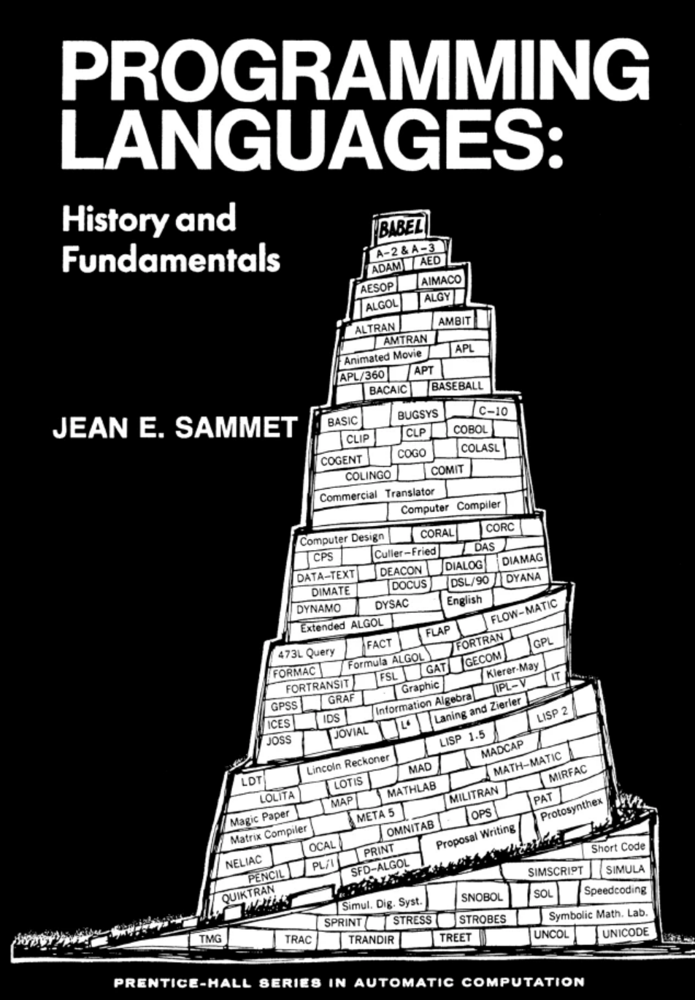
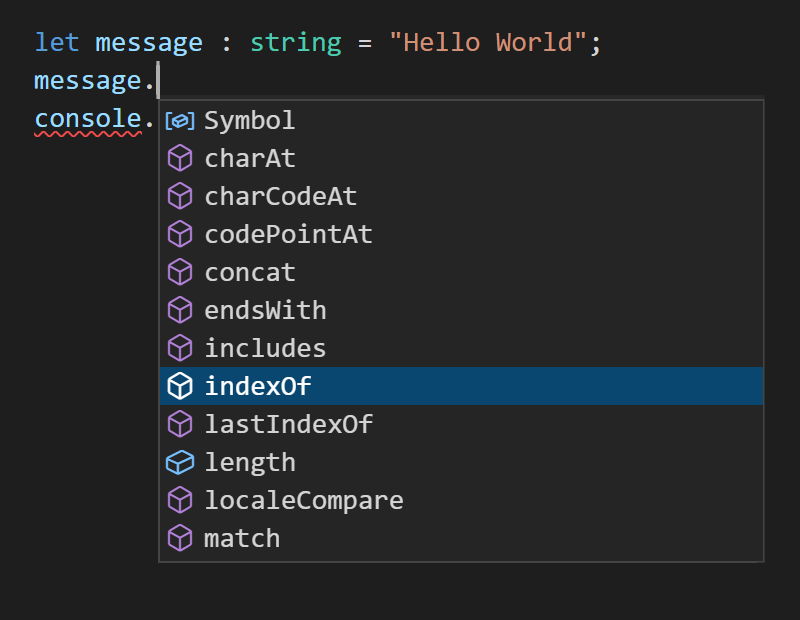

NPRG075
Programming language design
Tomáš Petříček, 309 (3rd floor)
petricek@d3s.mff.cuni.cz
https://tomasp.net | @tomaspetricek
Lectures: Monday 12:20, S7
https://d3s.mff.cuni.cz/teaching/nprg075

Introduction
What? Why? How?
Making programming
(languages | experience | systems)
better!
My background
-
PhD, University of Cambridge
Context-aware programming languages -
Microsoft Research Cambridge
F# and applied functional programming -
The Alan Turing Institute, London
Expert and non-expert tools for data science -
University of Kent, Canterbury
History and programming systems

Types for context-aware programming
Program as expression in small formal language
Type system determines what programs are valid
Safety proof shows no unauthorized accesses

Data science tools and languages
Result is a document not a program
Working with one concrete dataset
Different language and system requirements!

Programming systems & history
Interacting with a stateful environment
Let programmers do more in new ways...
It's not just a language!
Bringing everything together

Systems ⊃ languages
- Programming process matters
- Tools shape languages
- Harder to formalize & study!
Interdisciplinary research
- Formal language models
- Systematic design
- Qualitative and quantitative studies
Case study: LINQ
LINQ queries in Visual Basic .NET and C#
Dim db As New northwindDataContext
Dim ukCompanies =
From cust In db.Customers
Where cust.Country = "UK"
Select cust.CompanyName, cust.City
Why confuse programmers familiar with SQL?
SELECT [CompanyName], [City]
WHERE [Country] = 'UK'
FROM dbo.[Northwind]
What to expect?
Content and materials
Many different programming systems
TypeScript, Jupyter, ML/F#, Smalltalk, BASIC
Many different research methods
Design, logic, proofs, user studies
This is a new work-in-progress course
Slides on the web, but no textbook

Credit / zápočet
Small independent
or group project
Using any of the covered method
Described in a brief report (5 pages)
Deadlines
Topic by January 8
Draft by February 28
Programming languages
Conventional topics
Paradigms and features
Language paradigms
- Functional, OOP, Logic, etc.
- Their fundamental concepts
- Interesting "extreme" designs
Language features
- Variable scoping, pointers
- Lambda abstraction, inheritance
- Design and implementation
Theory and implementation

Parsing and automata
- Theory of formal grammars
- Parser implementation
- Computability theory
Compilers and interpreters
- Implementation techniques
- Register allocation
- Meta-circular interpreters

Why is this
not enough?
Talks about "what"
but not about "how"
Treat design as a research problem!
What can we study about programming systems?
Design
As a research discipline

What is design?
Design is the intentional solution of a problem, by the creation of plans for a new sort of thing, where the plans would not be immediately seen, by a reasonable person, as an inadequate solution.
Parsons (2015)
Designerly ways

Sciences study natural world
- By experiment, aiming at truth
Humanities study experience
- By analogy, aiming at justice
Design studies the artificial
- By synthesis, aiming at appropriateness
Cultures of programming
Common ways of thinking
Case study: TypeScript

Unsoundness by design
- Type checking limitations!
- It's a feature, not a bug?
- tinyurl.com/nprg075-ts
Design questions
- What research methods to use?
- Is partial soundness a thing?
- Is there a better design?
- What does "better" mean?
Cultures of programming
Engineering culture
- Programs are complex systems
- Tools can help us cope
- Careful balance of trade-offs
Mathematical culture
- Programs as formal entities
- Like good mathematics...
- Safe, composable, elegant
Cultures of programming

Humanistic culture
- Augmenting human intellect
- Programming helps us think
- Language close to human concepts
Hacker culture
- Programs are fundamentally bits
- Do not restrict the programmer
- Convenience, but full access
Type safety
Different perspectives
- Safety is the very essence of types!
- Useful as long as it makes programming easier
- Sometimes, you need to break the rules
- Does it help programmers think better?
Research methods
Interdisciplinary research

Interdisciplinary programming language research
Creating designs
Interviews, prototyping, formalism, analysis, history
Evaluating designs
Qualitative and quantitative studies, formal proofs
(Coblenz et al., 2018)

Programming language theory
Prove properties about small formal models
"Well-typed programs do not go wrong"
Discover and avoid subtle mistakes!

Human-centric system design
User studies, questionnaires, interviews, etc.
Qualitative analysis to design & test ideas
Quantitative analysis to compare designs

History of programming
What interesting past ideas were lost?
And the socio-political reasons for that?
Use history as source for new design ideas!
Conclusions
What to expect
Course outline
Preliminary structure
Design - Design and pattern languages
Usability - Human-centric language design
Semantics - Formal models of programming
Types - Types and type safety proofs
Beyond - Unexpected perspectives on types
Paradigms - History and programming systems
Complementary - Learning from past systems
Cognition - How humans think about programming
Reading

Jeremy Singer on Notebooks
- Notes on Notebooks: Is Jupyter the Bringer of Jollity?
- Available at: http://www.dcs.gla.ac.uk/~jsinger/notebooks.pdf
Why should you read this?
- You'll get more out of the lecture...
- Perfect for the morning tram ride :-)
- Notebooks are curious programming systems!
Conclusions
How to do research about
programming language design?
- Inherently interdisciplinary topic
- Logic, design, user studies, history & more!
Tomáš Petříček, 309 (3rd floor)
petricek@d3s.mff.cuni.cz
https://tomasp.net | @tomaspetricek
https://d3s.mff.cuni.cz/teaching/nprg075
References
Methodology
- Coblenz, M., et al. (2018). Interdisciplinary
programming language design. ACM Onward! - Parsons, G. (2015). The philosophy of design. John Wiley & Sons
- Cross, N. (2007). Designerly ways of knowing. BIRD
Assorted examples
- Marasoiu, M. et al. (2019). Cuscus: An end user
programming tool for data visualisation. Springer - Pierce, B. C. (2002). Types and programming languages. MIT Press
- Petricek, T., Jakubovic, J. (2021). Complementary science of interactive programming systems. HaPoC
- Petricek, T. (2017). Context-aware programming
languages. University of Cambridge